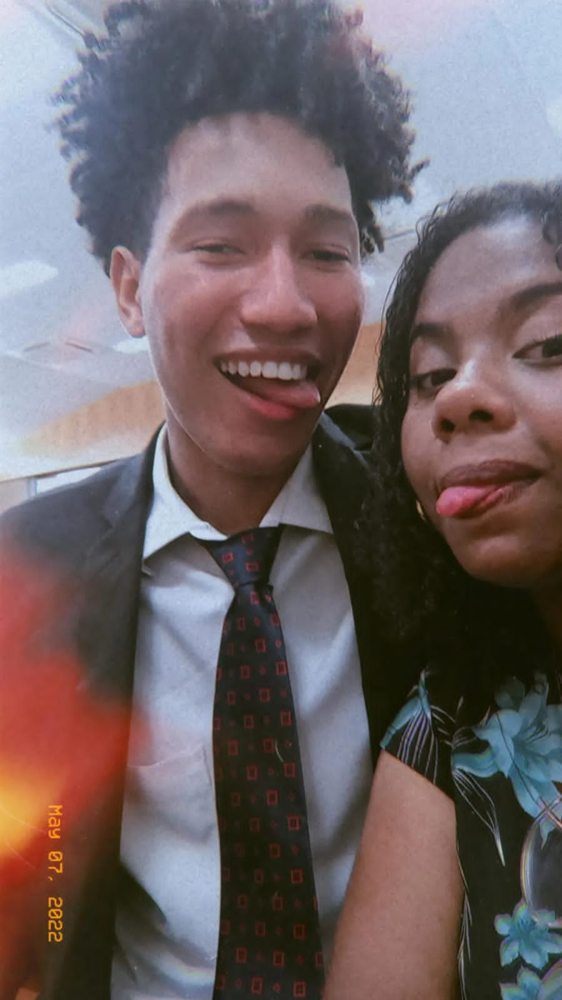
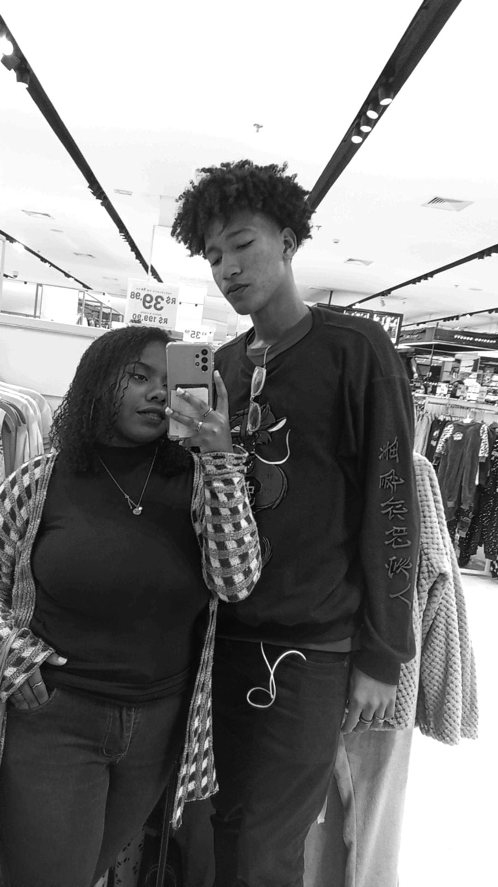
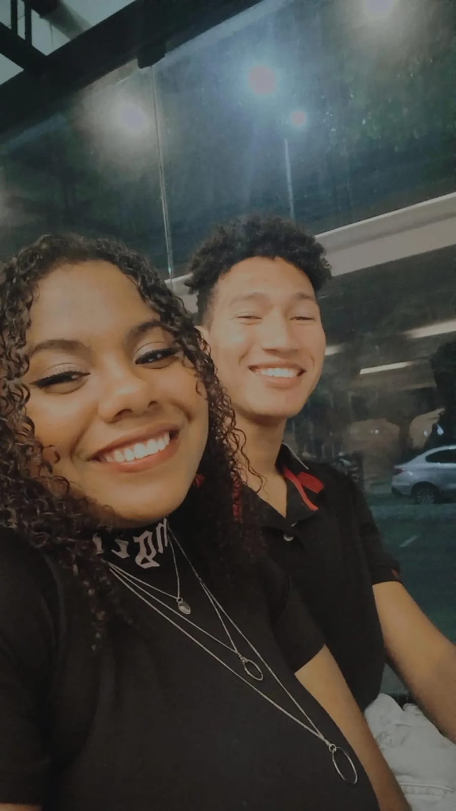
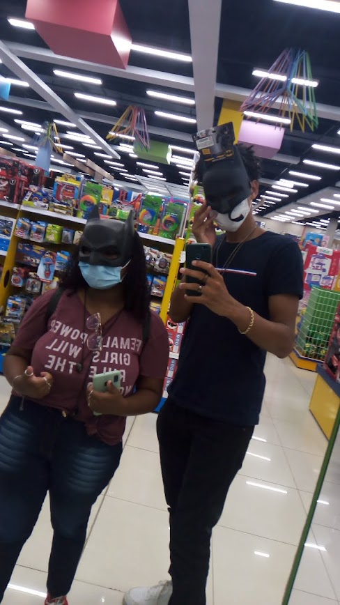
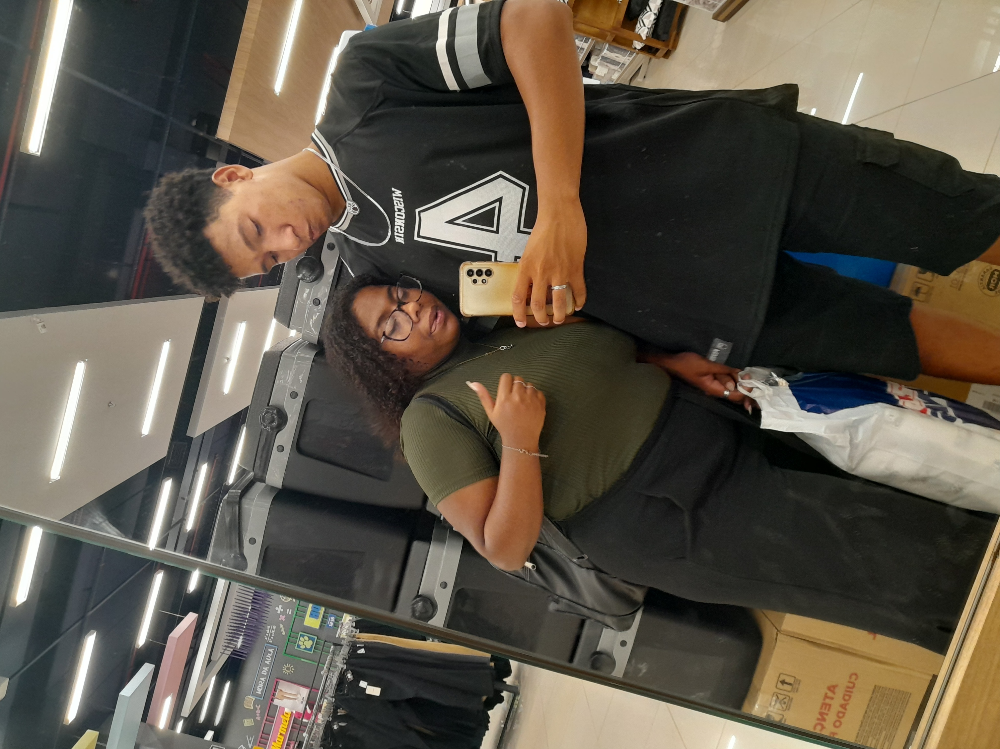

Eu tenho a melhor namorada do mundo
e posso provar
Nossos Melhores momentos
01 de março de 2021
Impossível não começar por esse, a data ja entrega muito e de repente a foto vai desbloaquear a memória também, o clima ja estava rolando fazia tempo e a pergunta "o que nós somos?" já estava rondando as nossas conversas a bastante tempo, então, na oportunidade perfeita nós resolvemos nos sentar e conversar até finalmente decidir se estaríamos namorando ou não, claro que eu, o último romântico, peguei a primeira flor que achei nos jardins da igreja, e disse "estamos namorando?", e você disse que estávamos sim, eu com esse óculos ultra maduro na cabeça, e a partir daí foi só ladeira abaixo.

3 de abril de 2021
Sem ordens cronoçógicas aqui, mas o motivo dessa foto existir e estar no site é muito simples, era o final da pandemia e depois de muito tempo tinha uma caravana, especificamente de jovens, onde eu ia pela primeira vez batizar outras pessoas e em uma ligação soltei a pérola "vou afogar ele lá" e a sua cara foi apenas impagável. Sem contar que claro, foi nossa primeira vez saindo e nos encontrando como namorados, com direito a docinhos, lanche, encontro com selinho e muita memória boa, saudades disso.

Carnaval de 2023
Adoro essa memória, foi a primeira vez que eu meti um louco no trabalho por que não aguentava de saudades e vontade de te ver, era carnaval e supostamente eu ia trabalhar todos os dias com os alunos que quisessem. Você tava muito chateada por isso e eu também, não posso negar, e foi aí que a gente resolveu mesmo assim ir no cinema, não pelo filme nem nada, eu nem lembro o que a gente assistiu aí, mas aquele sentimento, te ver de noite e ir pro cinema, depois lanchar, nada podia ser melhor que esse dia.

Mêsversário no Espetto
É impossível não colocar essa memória dentro da lista, desde os nossos primeiros encontros o espetto estava entre os nossos planos, e depois de mais de um ano finalmente resolvemos ir e conhecer o lugar tão esperado. Nem pedimos nada de mais, uma batata frita com alguns adicionais, mas teve música ao vivo e você pediu uma bebida bem gostosa que eu nem lembro o nome depois a gente saiu pra ficar batendo papo e andando nas lojas, esses são os meus preferidos.

21 de outubro de 2023
Essa aqui nem faz tanto tempo, mas essa é simplesmente uma das minhas manhãs de sábado feriado preferidas desse ano, a gente se encontrou logo cedo e apesar de você ter me feito esperar por meia hora sentado no pé do morro, você chegou toda linda com a blusa do Brasil e o short cinza que a gente comprou, te fiz treinar os bíceps como nunca na vida simplesmente por não saber olhar o peso dos halteres e te dar um mais pesado que você tava acostumada, depois ainda teve caldo de cana, salgadinho do mercado e um baita pratão de arroz apimentado pra nós dois, por mais sabados assim, por favor.

8 de junho de 2023
Essa é a minha preferida de uma noite bem especial, entre vários outros motivos, você tava simplesmente maravilhosa, linda mesmo! caprichou na maquiagem, o cabelo tava sensacional, teve trança e cílios, seu vestido totalmente perfeito combinou muito com você, e principalmente, a gente se divertiu muito essa noite, as musicas, as brincadeiras, a gente comento a bessa, e zoando com as crianças, eu amo essa memória.

Dedicação do templo do Rio
Adoro esse dia e essa memória, a começar pelo fato de nós dois termos aparecido no site oficial da igreja divulgando e compartilhando o evento enquanto estávamos fofocando, o que nós fazemos de melhor, reencontramos com alguns conhecidos de anos atrás e viajamos juntos mais uma vez, na verdade, essa foiuma das primeiras vezes que a gente foi pra um lugar longe um do lado do outro, com direito a música no fone e muita sonequinha sua no meu ombro.
Formatura do ensino médio
O final do ciclo de 12 anos das nossas vidas, mas principalmente dos últimos três, apesar do Covid e de todo o sofrimento com o EAD, nós passamos por isso, e nos apoiamos ao máximo em todos os momentos. Teve ajuda em trabalho da escola, teve aula particular de madrugada, teve estudo pra prova e construção de história em quadrinho no domingo a tarde e diversos outros. A memória do sentimento que a gente teve de "acabou a guerra" e "finalmente livres" é uma das melhores coisas de todas.

Rolês no Park Sul
Essa eu gosto, mas não pelo dia que a gente tirou ou pelo momento que ela captura ou por como a gente ta bonito nela (apesar de estarmos lindos aí), a real é que essa foto mostra bem o tipo de saída que a gente gosta toda vez que sobra um dinheiro ou a gente ta cansado da vila, o Park Sul, la tem loja pra zanzar,a havan pra tirar foto e olhar roupas e outras coisas, máquinas de pelúcia pra pegar moedinhas perdidas, um cinema bem maior e mais opções de conforto, vez ou outra tem uma atração a mais, como um parque de diversões ou circo, e finalmente, a praça de alimentação, que apesar de todas as opções, a gente sempre vai cair no BK ou no Mc, e sabe, eu amo muito tudo isso, principalmente com você
01 de março de 2023
Nosso primeiro aniversário, um ano aguentando todas as chatisses, birras e marras, passando mundos e fundos um do lado do outro, apoiando em cada desafio e dificuldade, a companhia um do outro sempre foi a nossa maior força. Na real que a gente sequer comemorou mesmo no dia certo, fomos no mattos no sábado (dia 4) porque eu tava trabalhando naquela quinta-feira, mas isso não nos impediu de celebrar no dia, a gente marcou um piquenique com café da manhã na praça da ETPC, cada um levou algumas coisinhas, mas principalmente, além da comida eu fiz questão de colocar um item a mais, o anel do seu tão sonhado pedido de namoro de verdade! Espero que você lembre desse dia com tanto carinho quanto eu lembro, o primeiro de muitos aniversários.
21 de dezembro de 2021
Essa é definitivamente a foto mais antiga desse site, mas não somente, é também a nossa primeira foto juntos, na nossa primeira saída juntos, você lembra bem mas eu vou narrar em poucas palavras ainda assim, do meu ponto de vista: Estava no meio de uma viagem quando nem a dta pra voltar era certeza ainda e a minha melhor amiga (naquele tempo ainda era) me manda uma mensagem quase que implorando por uma companhia pra ver o novo filme do homem aranha, que tinha a promessa de ser o filme do ano com o reencontro de Peters, eu de primeira recusei, mas depois, mesmo sabend que ja teria visto o filme, decidi ir e curtir esse momento com ela. Acontece que lá rolou o nosso tchan, o clima pintou e você ficou toda caidinha por mim, mas claro que eu, marrento como sou, cortei logo o seu bartato, planejando claro, te conquistar ainda mais no futuro pra passar a vida toda te enchendo o saco (só que não), na real que eu quase estraguei tudo aquele dia, mas ainda bem que a gente foi muito persistente e flertamos aquele natal inteirinho, depois disso, o resto é história!
21 de dezembro de 2023
Perto do dia dos namorados desse ano, eu comentei pra você que estava fazendo um carninho com algo secreto, o tempo passou, e apesar de eu realmente ter trabalhado duro nele por muito tempo, o paper é algo que se perde, agora, uma vez que algo está na internet, é pra todo o sempre. Essa é a versão digital aprimorada daquela ideia original do caderninho, eu tô completando e finalizando os últimos detalhes no dia 21, exatamente 2 ano depois do nosso "primeiro encontro". Sem saber, você sugeriu uma foto do mesmo modo, no mesmo lugar e quase na mesma pose que a gentr tirou aquele dia, e era impossível não finalizar o site com ela. Da mesma forma, é impossível não ver essas imagems tão próximas e pensar em como tudo mudou, como o tempo passou, e como a gente aprendeu um com o outro. Eu posia passar parágrafos inteiros aqui descrevendo nos mínimos detalhes, mas em poucas palavras, eu tenho certeza que aqueles dois amigos que foram ver homem-haranha: sem volta pra casa, mesmo que naquele momento nuna imaginassem o que viria, estariam muito orgulhosos, e principalemnte, ansiosos para serem nós dois. A caminhada nunca foi muito fácil, temos nossos altos e baixos, mas o mais importante, é que independente do momento (ai que brega) nós temos um ao outro. Amo você, um feliz natal ❤️🎅❤️
